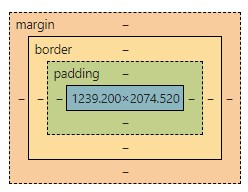
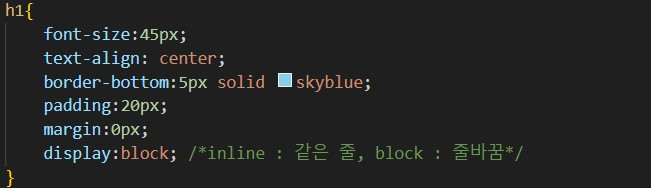
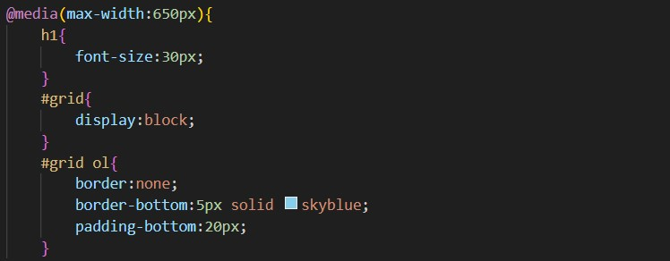
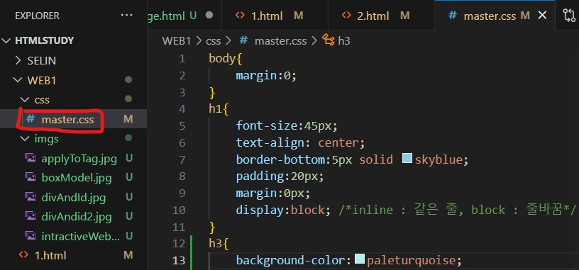
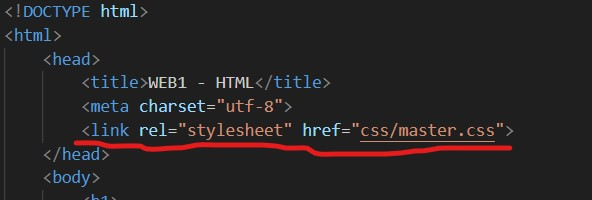

CSS
Cascading Style Sheets
웹페이지를 꾸미기 위한 스타일 언어이다
Box model

HTML 태그 하나하나를 박스 취급한다
이 박스를 구성하는 요소들이 있다
content
- width와 height가 차지하는 공간
padding
- content와 border 사이의 간격
border
- tag(content)를 둘러싸고 있는 선
margin
- (border 기준으로) content와 다른 content 사이 간격
padding, margin은 간격이므로, 전체 및 네 방향에 대해 크기와 색 설정이 가능하다
padding, padding-bottom, padding-left, padding-right, padding-top
margin, margin-bottom, margin-left, margin-right, margin-top
ex) border:5px purple
border는 선이므로, 선의 모양 및 색 설정이 가능하다
none(디폴트, 존재하지 않음), hidden(숨김), dotted(점선),
dashed(대쉬선), solid(실선), double(겹선),
groove(둥근 음각), ridge(둥근 양각), inset(각진 음각), outset(각진 양각),
initial(디폴트 값에 맞춤), inherit(부모 요소에 맞춤)
기본 태그에 CSS 적용하기
- 기본 태그에 { }를 사용하여 해당 태그에 대한 style 속성을 적용할 수 있다
<div>태그와 id 속성 사용하여 적용하기
- 특정 태그에 대하여 style을 적용하기 위해 <div>와 id 속성을 이용할 수 있다
1. style 적용을 원하는 부분을 div 태그 안에 넣는다
2. 해당 div에 대해 id 속성을 이용하여 이름을 지어준다
3. css 파일에서 #(id명)으로 해당 부분에 style을 적용한다
반응형 웹페이지
media query를 이용해서 조건에 따라 다르게 디자인할 수 있다
ex)아래 예시는 크기가 800 이상일 경우 해당 태그 내용을 안보이게 한다

CSS 코드의 재사용
css파일을 제작하고, head에 이를 링크함으로써 여러군데에서 재사용할 수 있다

css 파일

html 파일에서 사용
CSS 속성 모음
글씨(font)
-
font-size
- 글씨 크기를 지정한다 (px 사용) -
text-align
- 텍스트 정렬한다
- left(좌측), right(우측), center(중앙), justify(양쪽) -
color
- 글씨 색 지정
구조
- display